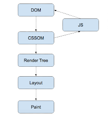

Critical Render Path se refiere a la secuencia de pasos
que el navegador realiza para recibir código en HTML,
CSS y JavaScript y convertirlos en la vista inicial de
una página web.
La ruta de procesamiento crítica es la secuencia de
pasos que sigue el navegador para convertir HTML,
CSS y JavaScript en píxeles en la pantalla.
La ruta de renderización crítica incluye el modelo de
objetos de documento ( el modelo de objetos
CSS ) el árbol de renderización y el diseño
